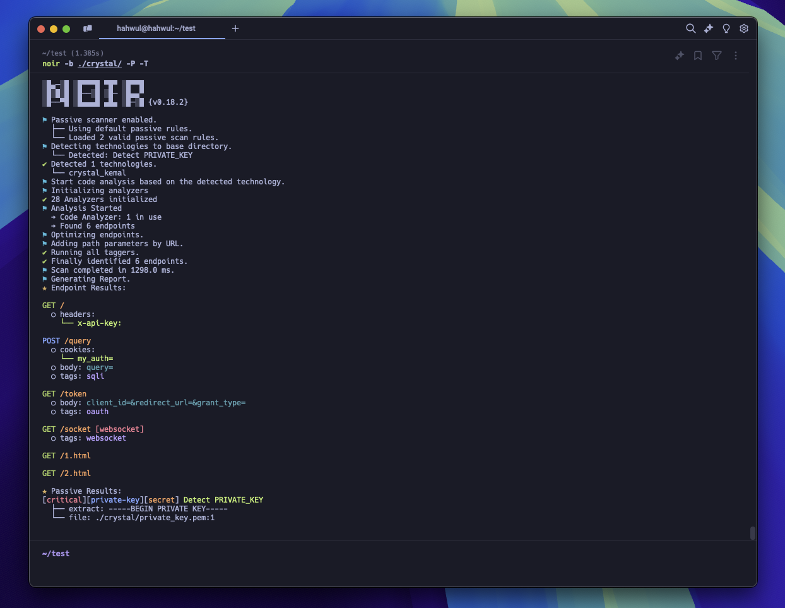

Your First Scan

This page runs through a first scan end to end — pointing Noir at a project, reading what it reports, and shaping the output for your workflow. Each step builds on the one before it, so it's worth following in order the first time through.
Run a Scan
Pick a project directory and scan it:
noir scan /path/to/your/app
Or if you're already inside the project:
noir scan .

Noir reads the source files, detects which frameworks are in use, and prints every endpoint it finds: methods, paths, parameters, headers, and cookies.
v0 compatibility: the v0 form
noir -b ./appstill works without changes. The router falls back toscanfor any invocation that starts with a flag.
Check What Was Detected
Curious which technologies Noir picked up? Add --include techs to see them alongside the results:
noir scan . --include techs
To see every technology Noir knows how to analyze:
noir list techs
If your framework isn't listed, you can still use AI-powered analysis to detect endpoints.
Try Different Output Formats
The default output is a human-readable table. Depending on your workflow, you might want something else:
# Machine-readable JSON for scripting and pipelines
noir scan . -f json
# YAML for easy reading and config-friendly workflows
noir scan . -f yaml
# OpenAPI spec, useful for generating API docs or feeding into tools
noir scan . -f oas3
# cURL commands you can run immediately against a live target
noir scan . -f curl -u https://your-target.com
See all available formats with noir list formats, or in the Output Formats section.
Save Results to a File
Instead of printing to the terminal, write the output to a file with -o:
noir scan . -f json -o results.json
This is useful for diffing results between scans, feeding into CI pipelines, or sharing with your team.
Trace Endpoints Back to Source
Want to know exactly where an endpoint was defined? Add --include path to show source file locations:
noir scan . --include path
Combine multiple enrichments with one flag:
noir scan . --include path,techs -f json -o results.json
Focus Your Scan
Large monorepos may contain many frameworks. You can narrow the scan to what matters:
# Run only the Rails and Django detectors (skip everything else)
noir scan . --only-techs rails,django
# Force-tag the project with these techs without running their detectors
noir scan . --techs rails,django
# Scan everything except Express
noir scan . --exclude-techs express
# Skip files by glob (useful in monorepos, comma-separated)
noir scan . --exclude-path "*_test.go,vendor/*,**/node_modules/**"
--only-techs and --techs look similar but do different things: --only-techs filters the detector list (faster scan, only those detectors run), while --techs adds techs to the result without running detection (useful when you already know the stack and want to skip discovery).
Enrich the Output
--include adds per-endpoint detail to the plain output, and
--ai-context attaches a review context for AI auditors.
# Attach 1-hop handler callees (function/method calls inside the route body)
noir scan . --include callee
# Attach an AI-review-ready context (guards, callees, sinks, validators, signals)
noir scan . --ai-context
# Narrow the AI context to a few categories
noir scan . --ai-context guards,sinks
See Callee Coverage and AI Context for the data shape and per-framework support.
Quick Reference
| Flag | What it does |
|---|---|
| positional paths | One or more directories to scan (noir scan ./api ./worker) |
-b <path> |
Same as positional; v0-compatible |
-f <format> |
Output format (json, yaml, oas3, curl, etc.) |
-o <file> |
Write output to a file |
-u <url> |
Base URL for cURL/HTTPie output |
--include LIST |
Enrich plain output with path, techs, callee (comma-separated) |
--ai-context [LIST] |
Attach AI review context (guards, sinks, validators, signals, callee) |
--pvalue TYPE=VAL |
Fill parameter values in output (TYPE: any / header / cookie / query / form / json / path) |
--only-techs |
Run only these tech detectors (skip the rest) |
--techs |
Force-tag these techs without running their detectors |
--exclude-techs |
Skip these frameworks |
--exclude-path |
Skip files matching a comma-separated glob list |
--status-codes |
Probe each endpoint and attach the observed HTTP status code |
--exclude-codes |
Drop endpoints whose probed status matches (comma-separated; pairs with --status-codes) |
--config-file <path> |
Load default options from a YAML config file |
--concurrency <N> |
Worker count (default: CPU cores) |
--cache-disable |
Disable the LLM response cache for this run |
--cache-clear |
Clear the LLM response cache before running |
--verbose |
Detailed logging |
--no-log |
Suppress all logs |
--no-color |
Disable ANSI colors in plain output |
For build details (Crystal / LLVM / target), run noir version --verbose. Run noir help for the top-level overview or noir help <command> for any command's full flag list.
You've completed the Getting Started guide! Here's what to explore next:
- CLI Commands: The full v1 subcommand reference (scan, list, cache, config, rules, and so on)
- Configurations: Set default options so you don't repeat flags every time
- Output Formats: Dive deeper into all output formats
- Passive Scan: Scan for security issues like hardcoded secrets and misconfigurations
- AI Power: Use AI to detect endpoints in unsupported frameworks